Acordar todo dia e precisar cobrir uma sobrancelha que ficou grossa demais, com o formato errado, ou com aquela cor esverdeada que ninguém te avisou que ia aparecer.
Cansada de esconder o que não te representa mais?
Remoção segura, com técnica especializada e cuidado real com a sua pele. Para você se olhar no espelho e se reconhecer de novo.
Você não está sozinha
Acordar todo dia e precisar cobrir uma sobrancelha que ficou grossa demais, com o formato errado, ou com aquela cor esverdeada que ninguém te avisou que ia aparecer.
Olhar para uma tatuagem que um dia fez sentido… e hoje só te lembra de quem você não é mais.
Sentir vergonha de tirar foto, de ir à praia, de deixar a sobrancelha natural aparecer.
A pior parte não é a tatuagem ou a micropigmentação em si. É carregar algo no rosto ou no corpo que não te representa mais.
Se você se identificou com pelo menos uma dessas situações, você está no lugar certo.
A Solução
Cada pele conta uma história diferente. Por isso, aqui não existe protocolo genérico.
Remoção a laser de procedimentos que mancharam, ficaram com cor errada, ou simplesmente envelheceram. Com avaliação detalhada do pigmento e da profundidade, o tratamento é planejado para respeitar sua pele em cada etapa, devolvendo a ela a liberdade de começar de novo.
Seja uma tatuagem antiga que não faz mais sentido, ou uma que simplesmente não ficou como você queria. O processo é feito com técnica, segurança e foco na recuperação saudável.
Um espaço pensado para o seu conforto, com tecnologia, técnica e um olhar humano que faz toda a diferença.
Soluções seguras para corrigir, clarear ou recomeçar com técnica exclusiva.
Leveza, sofisticação e respeito à individualidade de cada cliente.
Um olhar treinado que une técnica, prática e sensibilidade estética.
Equipamentos modernos e métodos atualizados.
Cada cliente é única. Cada procedimento também.
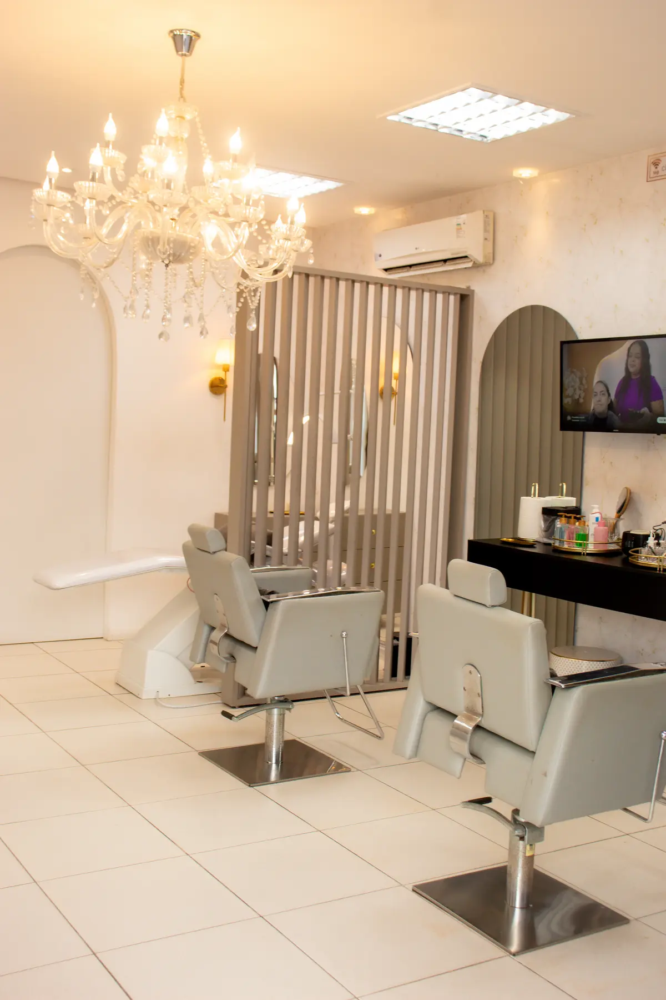
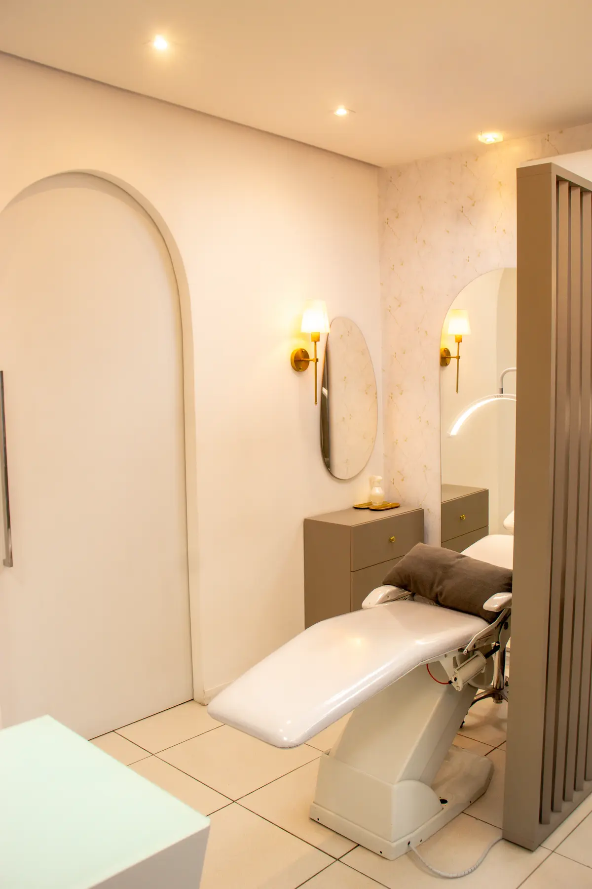
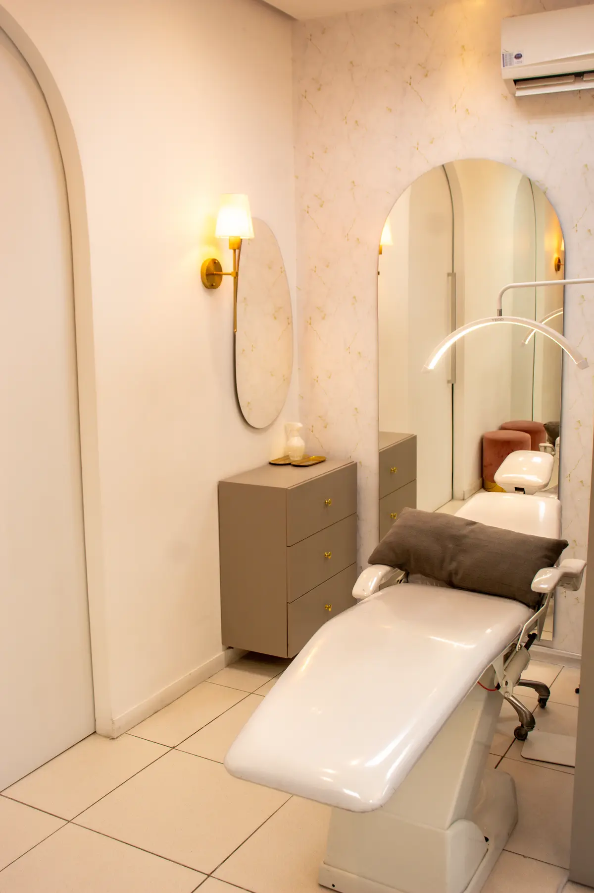
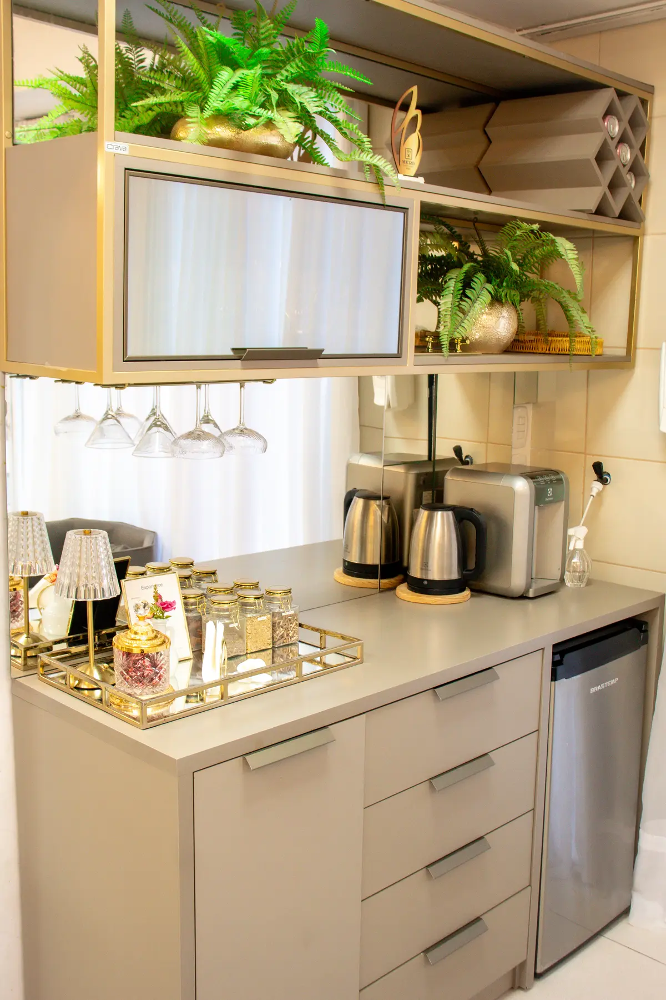
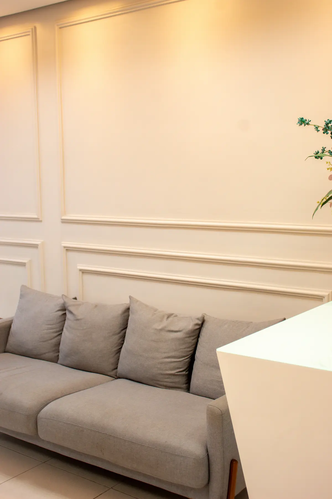
Nem sempre foi uma clínica.
Antes disso, era apenas a Clarissa, sua dedicação e um sonho. Começando muito nova, atendendo a domicílio com design de sobrancelhas, ela foi conquistando espaço, confiança e clientes.
Seu primeiro espaço físico era simples — mas foi ali, durante 5 anos, que tudo começou a ganhar forma.
Hoje, são 17 anos de experiência e 12 anos à frente da clínica, que se transformou em um espaço completo, estruturado e focado em resultados reais.
E há 4 anos, um novo avanço: a entrada do seu esposo, responsável pelos procedimentos de remoção, trazendo ainda mais segurança e precisão.
Fez uma micropigmentação que não ficou como esperava
Tem uma tatuagem que não faz mais sentido
Quer corrigir, suavizar ou recomeçar do zero
Busca um resultado mais natural e harmônico
Tem medo de piorar a situação e quer fazer com segurança
Resultados de pacientes reais, fotografados antes e depois das sessões.
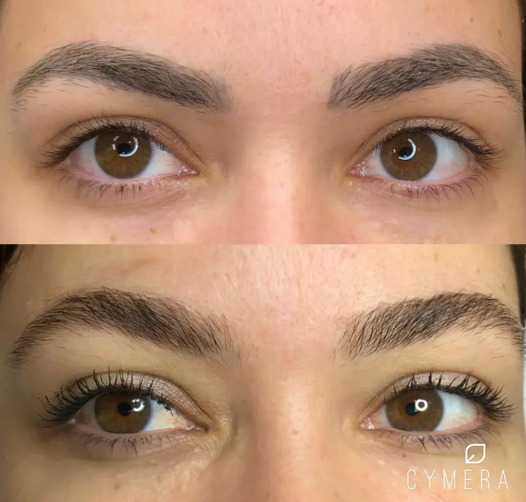
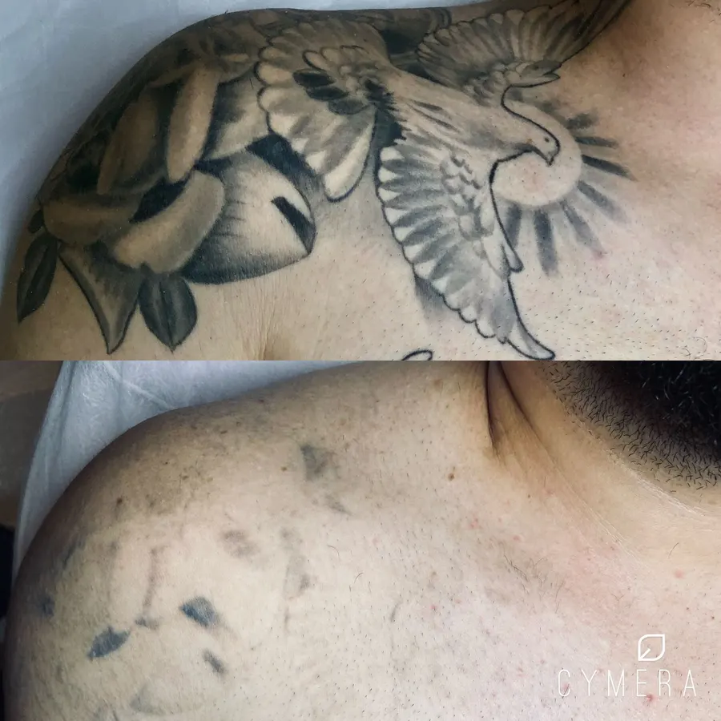
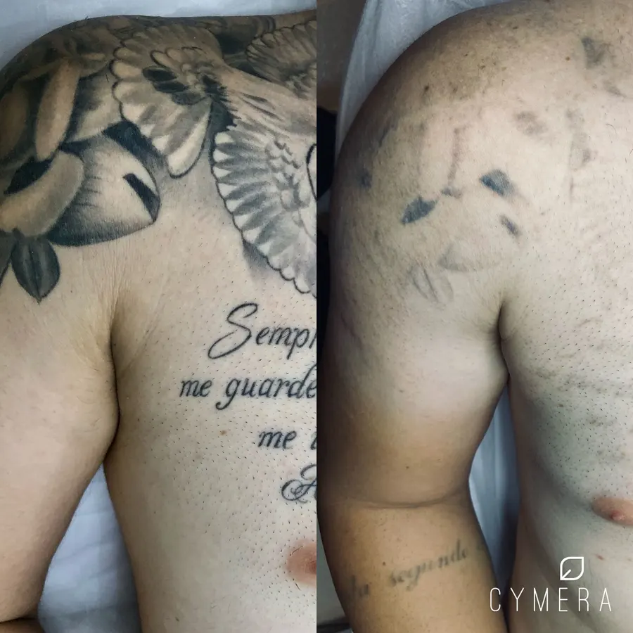
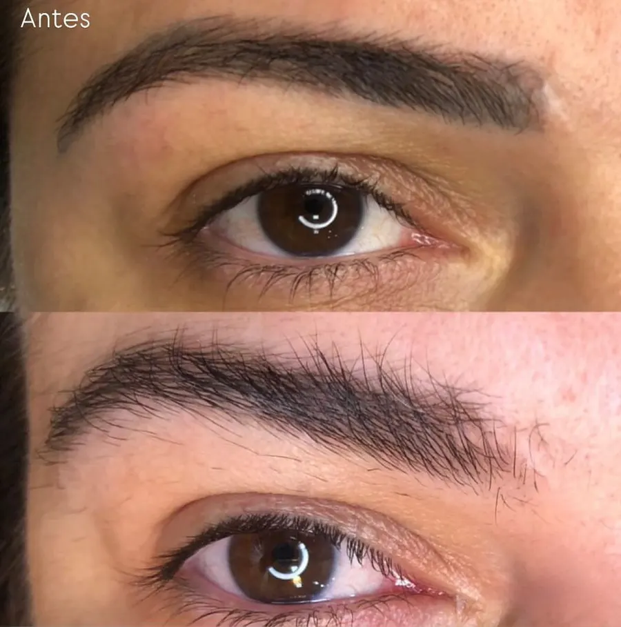
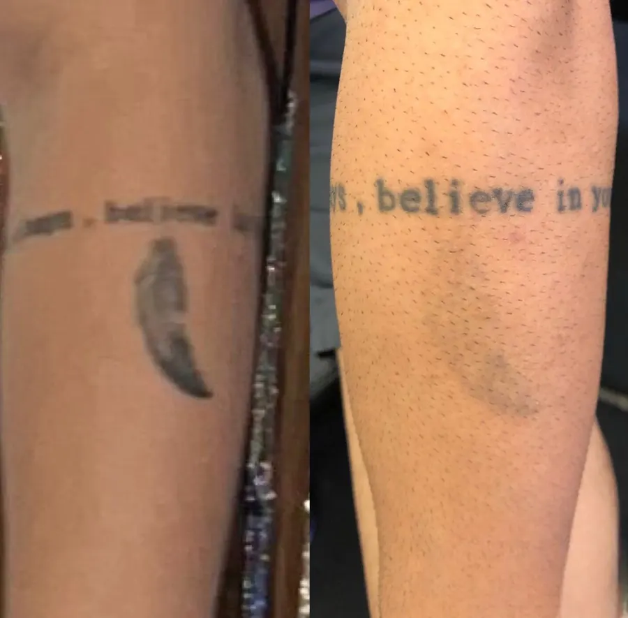
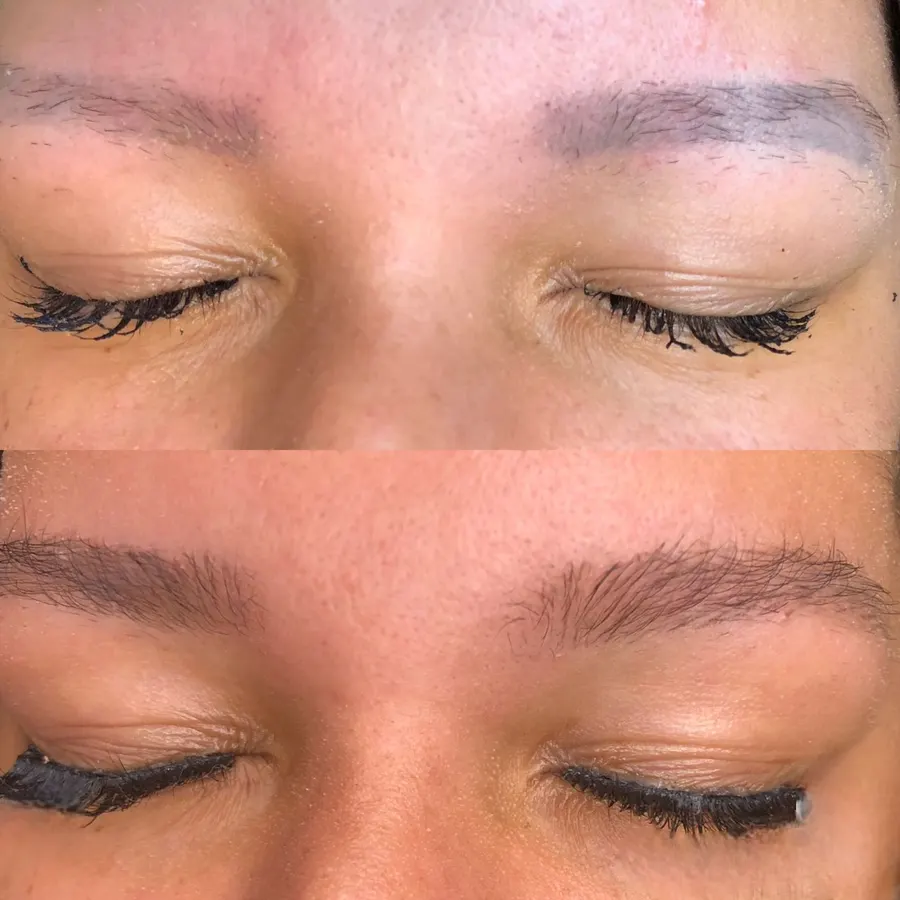
Envie uma foto ou descreva sua situação no WhatsApp.
Cada caso é avaliado individualmente, respeitando as condições da sua pele.
Sim. Em muitos casos, a remoção é o primeiro passo para um resultado melhor.
A remoção é progressiva e evolui a cada sessão.
Com técnica, tecnologia e protocolos corretos, o procedimento é seguro.
Cobrir sem remover pode comprometer o resultado. A remoção permite mais naturalidade.
Respeitamos o tempo ideal da pele para garantir segurança.
Atendimento presencial com hora marcada, em um espaço pensado para o seu conforto e privacidade.